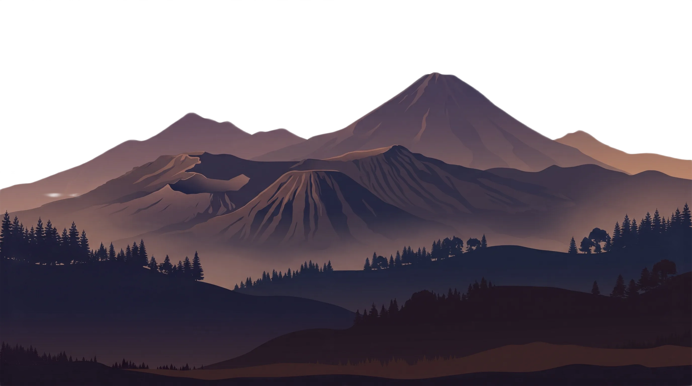
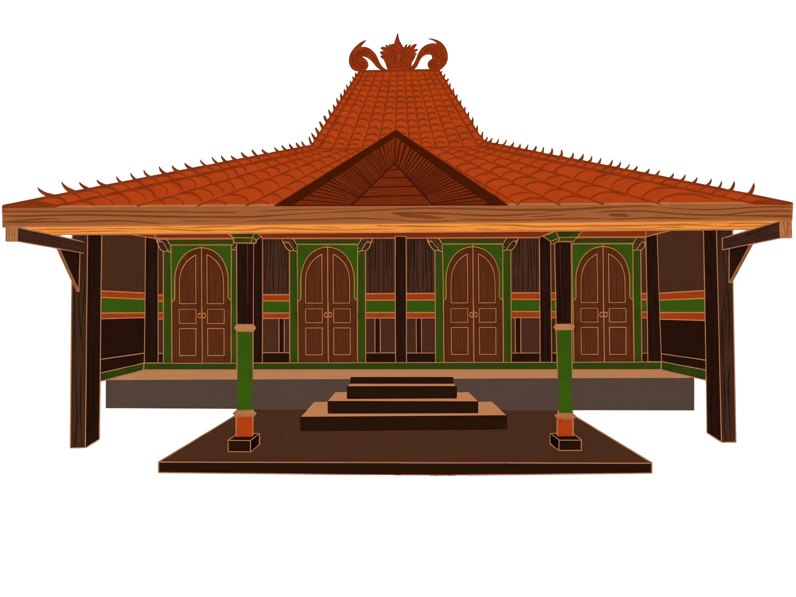

Ketuk salah satu pintu untuk masuk ke ruang pameran
Pameran interaktif Pesona Jawa Timur dirancang khusus untuk tampilan mendatar (landscape). Kemajuan kunjungan Anda tetap tersimpan saat perangkat diputar.
Sebagian aset gagal dimuat.

